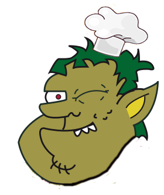

Nós somos um casal que aprecia uma boa culinaria caseira, nosso sonho sempre foi poder criar algo que pudesse proporcionar para quem também gosta, uma alternativa para fugir da padronização do industrial, e para quem ainda não conhece, proporcionar uma experiência inesquecível, deixando aquele gosto de quero mais.
Nossa idéia foi criar algo assim, simples mas ao mesmo tempo bem aconchegante. Queremos que nosso lugar e nossos produtos se destaquem pela qualidade e queremos que você se sinta em casa aqui.
Aguardamos sua visita!
Para quem estiver curioso em saber como o ogro ficou caolho, segue que ele nos contou
(e a verdade 🤣):
Bem, ele nos conta que veio de outra terra, onde ele era um grande guerreiro e com fama de feroz em batalha. Chegou um dia em que el estava com seu destacamento em meio a uma emboscada feita por seus inimigos, para proteger seus aliados ele se ofereceu para atrasar o bando enquanto eles fugiam. Ele conta que foram dois dias e duas noites de uma batalha sangrenta, na qual, em determinado momento um dos soldados inimigos perfurou seu olho com uma lança. Após derrotar todo o destacamento inimigo sozinho, ele voltou para casa e foi aclamado como herói, devido a sua lesão ele conta que perdeu toda sua ferocidade, então resolveu se dedicar a cozinhar, resolveu se mudar de localidade para não ofuscar os outros estabelecimentos ja que ele era um herói. Agora vamos para a história verdadeira, que nós descobrimos e não contamos para ele 😬, descobrimos que ele sempre foi um cozinheiro (muito bom, não podemos negar) porém ele era um pouco atrapalhado. Um dia enquanto cortava uma cebola, ele ouviu uma discussão acalourada do lado de fora, como a curiosidade falou mais alto, ele correu para a janela com a faca na mão, apoiou a mão na janela e curioso aproximou o rosto sem notar a faca, assim perdendo seu olho. Ele jamais aceitaria essa versão que nos foi contada por um ex cliente dele. 😁
